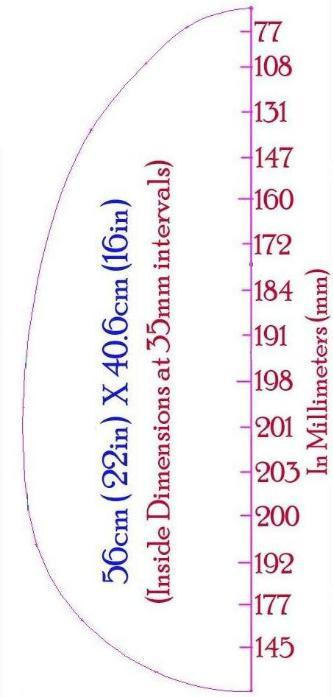
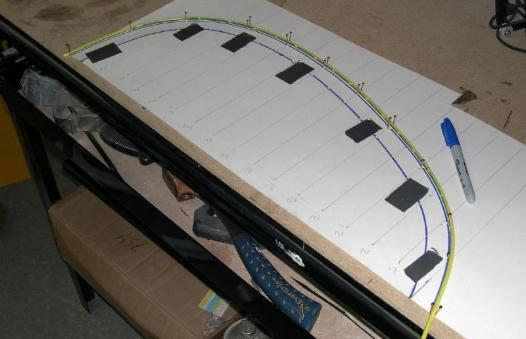

| Coaming Offsets (1 of 4) | Menu Previous Page Next Page |
|  |

Transferring Offsets to paper - Using poster board, mark out the offset number spacing every 35mm along the edge of the paper. Draw lines perpendicular to the edge, and mark the offset points ( half breadths). Using the same methods employed to draw the cross section concave lines, draw the inside edge of the 22" X 16" coaming. Next, mark and draw a parallel outside line 1" beyond the inside edge. cut out the template using scissors. For a 30" coaming, space the offsets 48mm apart. The Sea Rider, Sea Rover, and Sea Pup use the 22" X 16" coaming. The Sea Bear uses the 30" X 16" version.
1. Coaming Baseplate - Draw a centerline on a sheet of 1/2" HDPE and tape the template on one side of the line. Use a marker pen to trace out both sides on the plastic. Place the template on the other side of the centerline and repeat the process. Cut out the baseplate with a jigsaw. 2. Coaming - Repeat the above process to create the coaming as it and the baseplate are identical in size. 3. Coaming Lip - Make a second template that is 1.5" wide. Use it with 1/8" or 1/4" HDPE to create the coaming lip. Note: The same process is used to make an identical coaming out of plywood. Coaming offsets courtesy of Björn Thomasson/se |